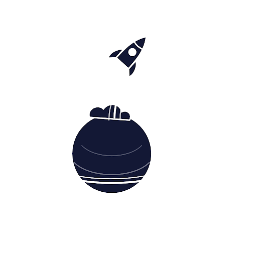

Tentang Kami
Profil Perusahaan
Sejak 20 Maret 2010 di Medan
Medan • Jakarta • Bandung • Yogyakarta • Kalimantan • Purbalingga • Jepara
Awal support di beberapa perusahaan yang bergerak di bidang perkebunan di wilayah Sumatera, karena kebutuhan semakin meningkat menjadi tantangan untuk PT. Durio Indigo memenuhi kebutuhan tersebut.
Dengan diresmikan PT. Durio Indigo pada tanggal 20 Maret 2010 di Medan, maka perusahaan ini semakin berkembang dengan meluncurkan berbagai produk aplikasi / program yang dikemas untuk berbagai kebutuhan industri, korporate, pendidikan, retail, edukasi dan pemerintahan.
Sekarang, PT. Durio Indigo meningkatkan layanannya di berbagai kota di Indonesia antara lain Jakarta, Bandung, Kalimantan, Yogyakarta, Purbalingga, Jepara, dan Medan karena kepercayaan pelanggan adalah kebanggaan kami.
Visi
Menjadi perusahaan penyelenggara aplikasi terkemuka skala nasional dan internasional yang memenuhi kebutuhan pelanggan dengan jaminan kualitas dan pelayanan yang memuaskan.
Misi
Memberikan kualitas layanan terbaik serta didukung dengan berbagai solusi dan inovasi jaringan telekomunikasi dan aplikasi dalam peningkatan layanan bagi pelanggan.
Membangun dan mengembangkan aplikasi dan jaringan di seluruh kota-kota di Indonesia dengan teknologi terbaru.
Menjadi "pool of talent" di bidang infrastruktur aplikasi dan teknologi informasi untuk mempercepat dalam pencapaian visi.
Corporate Culture
Integrity
Always stand on principle, even if you stand alone. I always speak the truth. What I Promise is what I deliver. I only ever make agreements with myself and others that I am willing and intend to keep.
Accountability
Proud for our mistake. The cleverest of all, in my opinion, is the man who calls himself a fool at least once a month. I will think of, and look at, my work as though it were done by my enemy. If I look at it to admire it, I am lost.
Collaborate
None of us is as smart all of u. I create and leverage collective genius in my life that beats with one heart with other; I Believe coming together is a beginning. Keeping together is progress. Working together is success.

Excellence
Excelent is doing ordinary things extraordinary well. I've focused on providing the best customer experience possible. I take great care to ensure that all my work will ultimate serve you, rather than our own internal goal or bottom line.
Fun
It's kind of fun to do the imposible. I live and work but I do not forget to play, to have fun in life and really enjoy it.
Passion
If passion drives you, let reason hold the reins. When work, commitment, and pleasure all become one and i will reach that deep well where passion lives, nothing is imposible.
Speed
I know my customer time is valuable, so when they're seeking solutions, they want it right away, I will keep my speed in mind with each new task I will do, I continue to work on making it all done even faster.
Corporate Social Responsibility
CSR akan lebih berdampak positif bagi masyarakat, ini akan sangat bergantung dari orientasi dan kapasitas lembaga dan organisasi lain, terutama pemerintah.
Studi Bank Dunia (Howard Fox, 2002) menunjukkan, peran pemerintah yang terkait dengan CSR meliputi pengembangan kebijakan yang menyehatkan pasar, keikutsertaan sumber daya, dukungan politik bagi pelaku CSR, menciptakan insentif dan peningkatan kemampuan organisasi.
Untuk Indonesia bisa dibayangkan, pelaksanaan CSR membutuhkan dukungan pemerintah daerah, keputusan hukum, dan jaminan ketertiban sosial. Pemerintah dapat mengambil peran penting tanpa harus melakukan regulasi di tengah hukum dan politik saat ini.
Ditengah persoalan kemiskinan dan keterbelakangan yang dialami Indonesia, pemerintah harus berperan sebagai koordinator penanganan krisis melalui CSR. Pemerintah bisa menetapkan bidang-bidang penanganan yang menjadi fokus, dengan memasukkan pihak yang kompeten.
Setelah itu pemerintah memfasilitasi, mendukung dan memberikan penghargaan bagi kalangan bisnis yang mau terlibat dalam upaya besar ini. Pemerintah juga dapat mengawasi proses interaksi antara pelaku bisnis dan kelompok-kelompok lain agar terjadi interaksi yang adil serta menghindari proses manipulasi satu pihak terhadap pihak lain.
Punya ide aplikasi? Mari diskusikan.
Wujudkan transformasi digital enterprise Anda bersama tim rekayasa teknologi Durio Indigo.